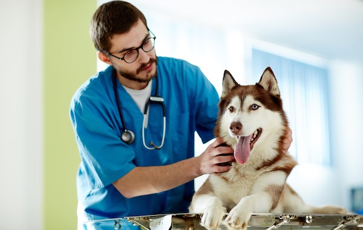
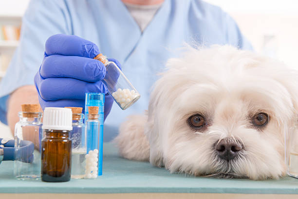
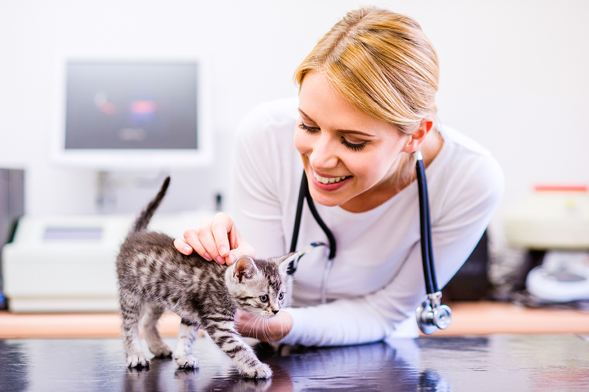
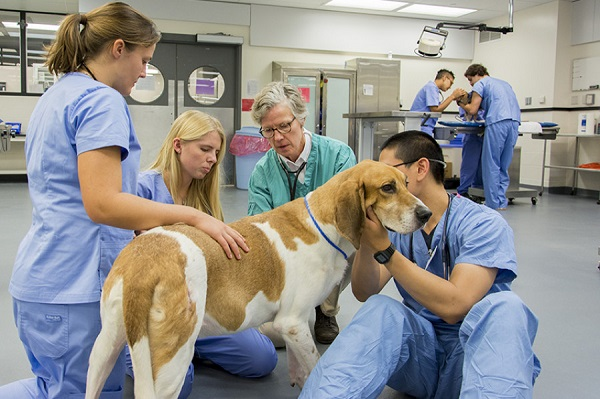

Citas Medicas |
|---|
| Los mejores servicios y atenion medica |
Citas Medicas |
|---|
| Los mejores servicios y atenion medica |
ANIMALS CLINIC |
|---|
|  | verifica: Como veterinaria mi función principal es Diagnosticar, pronosticar, tratar y prevenir las enfermedades que afectan a los animales domésticos, de experimentación, exóticos, salvajes y ganaderos. ¿Quieres agendar una cita en linea? !solo registrate¡ |
|---|
Los mejores servicios de veterinaria en los que puede confiar.Si está buscando un veterinario confiable en la ciudad, estamos aquí para ayudarlo. Somos conocidos por los mejores tratamientos veterinarios asequibles con citas rápidas y soluciones oportunas. |

|
|
COMO VETERINARIO
NOS ESPECIALIZAMOS EN: |
|  |
Medicina |
|---|
| Cada mascota es única y especial y así es como debe ser tratado, se medica según sus necesidades y condiciones. |
 |
Prevención y control |
|---|
| El chequeo es necesario tus mascotas también necesitan un control, nos encargamos de mantener su buena salud. |
|  |
Cuidados |
|---|
| Nos especializamos en los cuidados adecuados para cada tipo de mascota, facilitando la estadía y su recuperación en el proceso. |
Licenciatura en Médico Veterinario y ZootecnistaLos médicos veterinarios zootecnistas, son los profesionistas encargados de mantener la salud, así como de atender, prevenir y controlar las enfermedades de los animales. |
 |
|---|
|
Su comodidad y bienestar es nuestra prioridad
Te espera: |
Estudiante en la Universidad Católica de El Salvador, profesional veterinaria especializada según acuerdo al articulo de esta pagina web en doctorado animal. | |
Dra.Ramos |
Licenciada en medicina veterinaria y estudiante actual en UNICAES para seguir con su progreso en conocimiento animal de acuerdo a esta pagina web. | |
Miss. Guzmán |
Actualmente cursando especialización en Universidad Católica de El Salvador, Licenciada en ciencias de la salud titulo otorgado según esta pagina web | |
Miss Rodríguez |